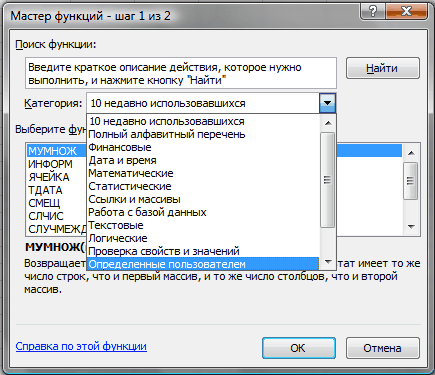

Что такое функция пользователя(UDF)?
Если потребовалось заиметь в Excel функцию, которой там еще нет, но она очень нужна или её применение значительно упростило бы жизнь при выполнение определенных задач, то самое время посмотреть в сторону функций пользователя.
Функция пользователя(UDF) - или в дословном переводе Функция, Определенная Пользователем, т.к. в оригинале она звучит как: User Defined Function. Так же их называют пользовательские функции.
Такие функции вызываются через Мастер функций -категория Определенные пользователем (User Defined):

Так что же это за функции такие? Функция пользователя это функция, написанная при помощи языка Visual Basic for Application (VBA) и вызываемая как любая другая функция с листа. Но т.к. эти функции пишутся самостоятельно - можно создать любую функцию, которая будет делать то, что ни одна стандартная функция делать не умеет. Естественно, теперь возникает вопрос как написать такую функцию. Для написания UDF понадобятся хотя бы базовые знания языка VBA. Я в статье опишу лишь принципы создания таких функций и после прочтения вы сможете создать простейшую функцию. Но это никак не означает, что я научу создавать функции на все случаи жизни, ибо это сводится к обучению самому языку программирования. Именно поэтому в статье рассмотрим лишь основные моменты и то, как уже написанные функции применить к своей книге.
Самое главное, что необходимо усвоить - функция пользователя:
Как создать функцию пользователя
Предполагается, что Вы уже обладаете начальными навыками написания процедур в VBA и умеете создавать эти самые процедуры, хотя бы самые простые.
Однако прежде чем читать дальше советую ознакомиться так же со статьей: Что такое модуль? Какие бывают модули?
Основные моменты, которые следует помнить при создании функции пользователя:
Function MySum(vArg1 As Double, vArg2 As Double) Dim dblSum as Double 'получаем сумму двух аргументов dblSum = vArg1 + vArg2 'присваиваем функции значение, чтобы она вернула его на лист(обязательно!) MySum = dblSum 'MySum имя функции и именно ему необходимо передать результат End Function
В приведенном выше коде я упростил стандартную функцию СУММ (SUM) до двух аргументов. Записанная на лист функция будет иметь такой вид: =Mysum(A1;A2), где:
A1 - первый аргумент(vArg1), ссылка на ячейку или число
A2 - второй аргумент(vArg2), ссылка на ячейку или число
Функция вернет #ЗНАЧ! (#VALUE!), если в качестве одного из аргументов передано не числовое значение.
Еще одна простая функция, которая вернет строку до первого пробела:
Function getWordBeforeSpace(Text As String) As String Dim i As Long Dim Result As String 'переменная для результата i = InStr(1, Text, " ", 1) 'ищем позицию первого пробела в переданном тексте 'если пробел есть и он не первым символом If i > 1 Then Result = Mid(Text, 1, i - 1) 'получаем текст до первого пробела Else 'если пробела нет - возвращаем все строку Result = Text End If 'присваиваем результат функции для возврата его на лист getWordBeforeSpace = Result End Function
Text - ссылка на ячейку или непосредственно текст, первое слово из которого надо извлечь. Если переданный текст не будет содержать пробелов или это будет число - функция вернет весь текст. Если ячейка будет пустая - функция вернет пусто и не выдаст ошибки.
Эту функцию можно записать и намного короче:
Function getWordBeforeSpace(Text As String) As String getWordBeforeSpace = Split(Text, " ")(0) End Function
|
1 2 3 |
Function getWordBeforeSpace(Text As String) As String |
Но в таком виде функция вернет значение ошибки #ЗНАЧ!(#VALUE!), если ячейка с текстом будет пустой. Вдаваться в подробности не буду. Могу лишь написать, что функция VBA Split разбивает указанный текст на отдельные части, используя для разбиения указанный разделитель. И создает из разбитых частей одномерный массив с нижней границей, равной нулю. А функция выше просто возвращает первый элемент этого массива.
Как вставить уже имеющийся код функции к себе в книгу
Для начала необходимо создать стандартный модуль. Затем в этот модуль вставить через копирование(или записать вручную) имеющийся код. Все, теперь функция доступна из диспетчера функций в категории Определенные пользователем(User defined), так же можно будет вводить эту функцию напрямую в ячейки той книги, в которой содержится код функции. Чтобы функция заработала очень важно разрешить макросы. Иначе результатом будет ошибка #ИМЯ!(#NAME!)
Если Вы используете версию Excel 2007 и выше, то книгу необходимо будет сохранить с поддержкой макросов: Меню -Сохранить как -Книга Excel с поддержкой макросов.